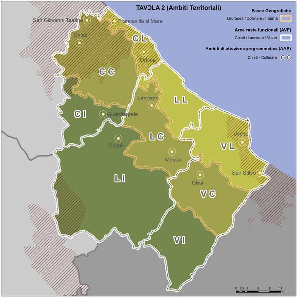

The variant to the Provincial Territorial Coordination Plan (PTCP) adopted by the Province of Chieti, led by President Francesco Menna and the centre-left, was conceived without ensuring adequate involvement of mayors and trade associations, so I am not surprised by the misgivings emerging from the territory in recent days. Considering that the election of the President of the Province and of the Council takes place through second-level consultations, that is, reserved to mayors and municipal councillors, the scant involvement of local authorities looks like an evident institutional discourtesy. It seems clear that, once elected, the centre-left majority thought it right to dismiss the administrators who had contributed to its election. The meetings that the provincial administration is holding across the territories, in an attempt to remedy the blatant slight to the mayors, are useless and belated. The discussion should in fact have taken place before the adoption of the measure, and not now that the safeguard rules have entered into force and the plan's more restrictive prescriptions are already producing effects. It should be remembered that the purpose of the PTCP is to coordinate the development of the provincial territory, and that is why the actions taken by the Menna administration required the fullest involvement of the municipalities. The choices made, instead, create evident disparities in the development possibilities of the territories concerned and, among other things, put in serious difficulty the municipal administrations that currently have a Master Plan being drafted.
An identical fate is reserved for the entrepreneurs and economic operators of the province who, in recent days, have been voicing understandable concerns about the critical issues and uncertainties contained in the revision of the production areas. Thus, the most important urban planning act of the Menna administration was produced in haste, creating interpretative ambiguity in the rules, to the detriment of the professionals who will have to grapple with technical regulations that are never fluid and always stuffed with excessive cross-references to further rules. A Plan that was launched on the very morrow of the approval by the regional government of the new urban planning law, and in blatant conflict with the latter's provisions, perhaps with President Menna's aim of triggering yet another dispute with the regional government. There is therefore a need to correct the Plan during the approval phase, duly accepting the observations that administrators, trade associations and citizens are preparing in these days, in the hope that the Province will not prove deaf to the demands of the territories.
Abruzzo – Chieti PTCP. The centre-left did not take mayors and trade associations into account. The plan needs correcting.
Translation of the official press release published in Italian.
